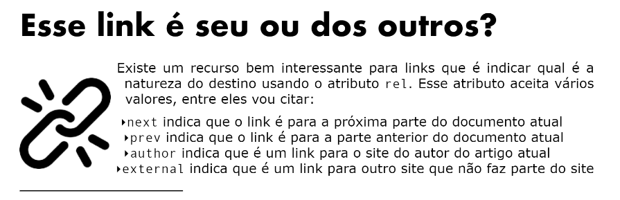

Voce pode acessar meu canal no YOUTUBE
Pode voce tambem acessar o Repositorio desses(_self que é o padrao) exercicios no GITHUB
OBS FRAMES ESTAO EM DESUSO:
_top vai desfazer todos os frames canal no YOUTUBE
_parent similar ao top fazendo referencia a pagina mae canal no YOUTUBE
_nomedoframe quando for usar frame canal no YOUTUBE
Outor tipos de rels
tag download caso for link para isso
tag nofollow caso voce nao de o aval para o site
link para a segunda pagina
link da 3 pagina